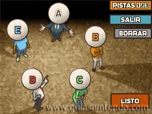

Hershel Layton
Profesor de Arqueologia en la universidad de Gressenheller- Contacto: professorlayton@Gressenheller.uk
- Formación: Arqueologia en la universidad de Gressenheller
- Experiencia: He resuelto multiples casos, muy famosos y controversiales, entre ellos la villa misteriosa y la mascara de los prodigio, he participado en inumerables explotaciones arqueologicas. Doy clases como profesor titular en la Universidad de Gressenheller de la que fui alumno.
- Acerca de
HERSHEL LAYTON

Senserit mediocrem vis ex, et dicunt deleniti gubergren mei. Mel id clita mollis repudiare. Sed ad nostro delicatissimi, postea pertinax est an. Adhuc sensibus percipitur sed te, eirmod tritani debitis nec ea. Cu vis quis gubergren.
Recorrido profesional como investigador
-
- La villa misteriosa
- 2007-2008
-
- La caja de pandora
- 2007-2008
-
- El futuro perdido
- 2008-2009
-
- La llamada del espectro
- 2009-2011
-
- La mascara de los prodigios
- 2010-2011
-
- El legado de los ashalanti
- 2013-2014
En la actualizad he participado en varias peliculas y dispongo de varios juegos de movil, aunque mi pasion es dar clases en la universidad de Gressenheller.
Este curriculum me recuerda a un puzzle...
Cada una de estas personas ha pedido dinero prestado a una de las otras cinco, y a su vez ha prestado dinero a otra persona.
Sabes lo siguiente:- B pidió dinero prestado a A.
- E no prestó dinero a A.
- C prestó dinero a D.